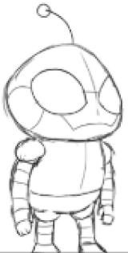

SketchBocetoFinal
ProtagonistProtagonista
Echo
A humanoid robot that regains consciousness just as it is about to be scrapped in a factory. It seeks justice for the robots of its kind, which are built to serve and easy to replace.Un robot humanoide que recobra la conciencia justo cuando iba a ser desechado en una fábrica. Busca justicia para los robots de su tipo, hechos para servir y fáciles de reemplazar.
- PersonalityPersonalidad
- Silent, skeptical and determinedSilencioso, escéptico y decidido
- LookEstética
- Industrial design with bright blue lights and factory markings worn by timeDiseño industrial con luces azules brillantes y marcas de fábrica gastadas por el tiempo
- HeightAltura
- 1.75 m